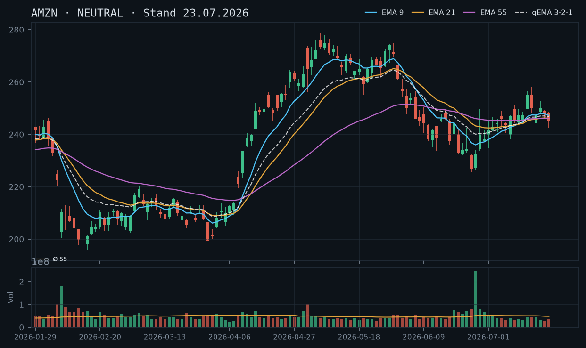
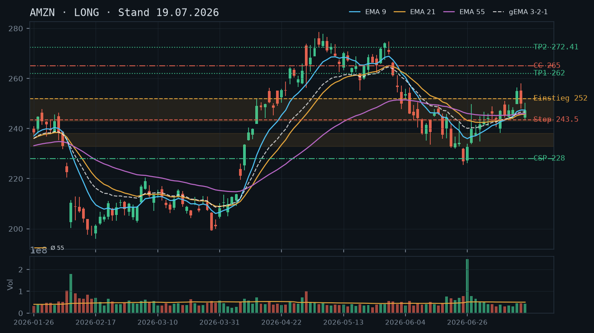
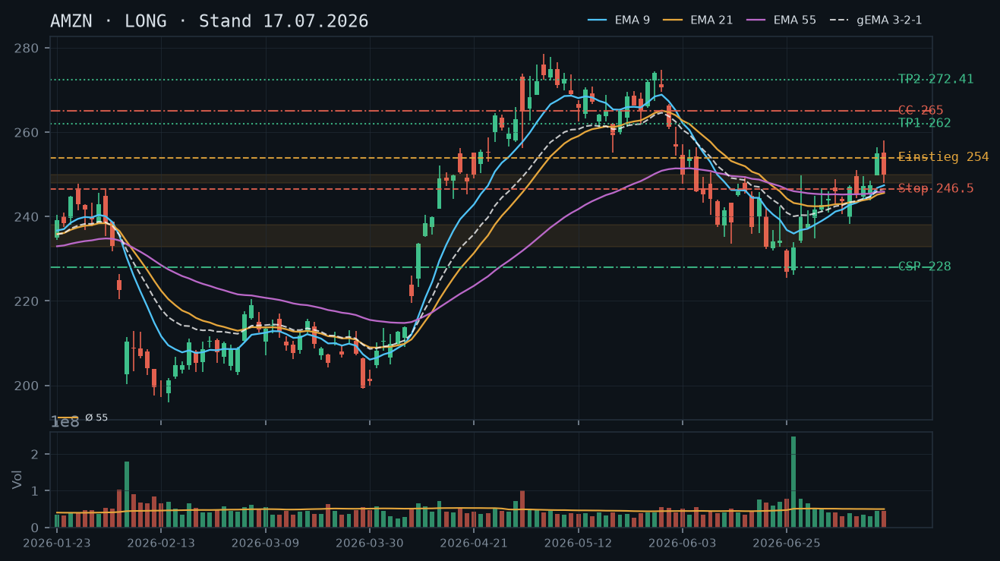
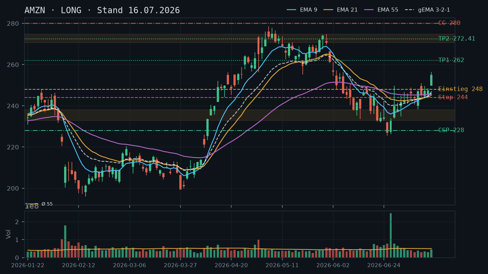
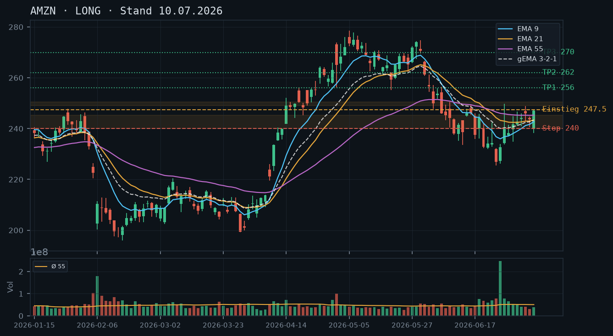
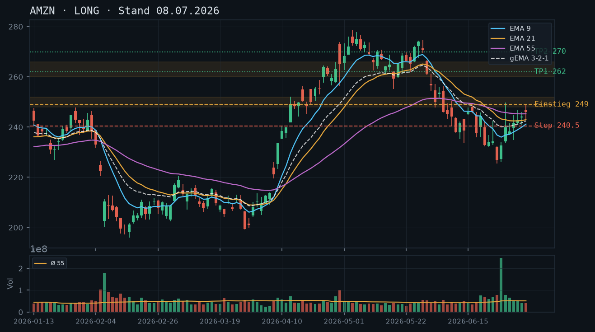

AMZN bricht am 23.07. intraday mit -2,03% auf 239,87 USD deutlich unter die EMA-Cluster-Zone (245–247) ein – die Long-These der Voranalysen ist damit vorerst invalidiert, das Primärziel 262,00 bleibt unerreicht, und die Aktie steuert auf die erste kritische Support-Zone bei 232–238 zu.

Die Trendstruktur hat sich gegenüber den Voranalysen (16.–19.07.) spürbar verschlechtert. Nach dem Hoch vom 16.07. bei 258,08 hat AMZN eine Serie fallender Hochs ausgebildet: 258,08 → 252,89 (20.07.) → 249,34 (21.07.) → 248,45 (22.07.) – kombiniert mit fallenden Tiefs (248,00 → 246,42 → 242,45). Intraday am 23.07. wird nun auch der EMA-Cluster (EMA9 ~247, EMA21 ~246, EMA55 ~246) klar nach unten durchbrochen, was das erste echte bearische Struktursignal seit dem Tief vom 25.06. (225,55) darstellt. Der nächste relevante Support liegt bei der mehrfach bestätigten Juni-Konsolidierungszone 232,79–238,00, darunter das Verlaufstief 225,55.
Die letzten drei Tageskerzen zeichnen ein klar bärisches Bild: Am 21.07. ein doji-artiger Innenstabtag (Schluss 247,55, Range eng), am 22.07. eine negative Kerze mit tieferem Tief (242,45) und Schluss bei 244,85 – damit Bruch der 244er-Unterstützung, die seit Mitte Juli gehalten hatte. Intraday 23.07. setzt sich dieser Abwärtsdruck mit rel. Volumen von bisher ~0,71–1,0x fort (kein Kapitulationsvolumen, aber konsistenter Verkaufsdruck). Die Abweisungskerze vom 16.07. (Shooting Star mit Hoch 258,08, Schluss 249,89) hat sich damit als valides Toppingsignal erwiesen – diese Einschätzung aus der 17.07.-Analyse wird hiermit explizit bestätigt.
EMA9 (247,24), EMA21 (246,14) und EMA55 (246,12) lagen zum 22.07.-Schluss eng beieinander und komprimiert – ein Kompressions-Artefakt, der jetzt nach unten aufgelöst wird. Der gema_321 (246,69) liegt ebenfalls eng am EMA-Cluster. Der aktuelle Intraday-Kurs (239,87) handelt rund 7 USD unter diesem gesamten EMA-Verbund – ein klarer Trendbruch nach unten. Die bullische EMA-Struktur der Voranalysen (EMA9 über EMA21 über EMA55) ist damit zumindest kurzfristig negiert.
| Richtung | Kein Trade |
| Einstieg | Kein Neueinstieg Long; Short nur für aggressive Trader: Break unter 238,00 (Tagesschluss) als Trigger, dann Short mit Ziel 225,55 |
| Stop | 244,00 (über dem EMA-Cluster und der 22.07.-Kerze) |
| Ziel | 232,79–225,55 (Juni-Konsolidierungszone / Verlaufstief) |
| CRV | Kein direktionaler Trade mit gutem CRV auf aktuellem Niveau identifizierbar – abwarten |
Der intraday-Einbruch auf 239,87 USD (-2,03%) hat AMZN direkt in die Nähe der kritischen Support-Zone 232–238 gedrückt. Ein neuer CSP unterhalb dieser Zone (z.B. 225er oder 220er) hätte bei weniger als 12 Tagen Restlaufzeit nur minimale Prämien und würde das Andienungsrisiko in einem beschleunigten Abwärtstrend ohne klares Boden-Signal eingehen. Ein CC auf den 200 Aktien im Bestand wäre technisch denkbar, aber ohne klare Widerstandszone in Reichweite (nächster Widerstand erst bei 244–248, also EMA-Cluster, der gerade gebrochen wird) fehlt ein belastbarer Strike-Anker. Beide Geschäfte werden daher auf null gesetzt – Qualität vor Vollständigkeit.
Bestand: Laut IBKR-Snapshot (11:36 Uhr, 23.07.) sind 200 AMZN-Aktien im Bestand, keine offenen Optionspositionen. Der aktuelle Kursverlust (-2,03% auf 239,87) drückt die Position in Buchverlust-Terrain relativ zu den jüngsten Hochs. Handlungsbedarf bei den Aktien besteht nicht zwingend – die Zone 232–238 ist ein technisch relevanter Support, ein Halten bis zur Klärung der Kurslage ist vertretbar. Wer das Downside-Risiko absichern möchte, könnte einen Protective Put (z.B. 232er oder 228er, Verfall 01.08.2026) prüfen – das ist jedoch eine defensivere Maßnahme außerhalb der Stillhalter-Strategie. Für neue Stillhalter-Geschäfte: erst abwarten, ob die Zone 232–238 hält und eine Stabilisierungskerze (Hammer, Bullish Engulfing) auf Tagesbasis entsteht.
Die Long-These der Analysen vom 16.07., 17.07. und 19.07. basierte auf drei Säulen: (1) intakter Aufwärtstrend mit höheren Hochs/Tiefs seit dem Junittief, (2) bullischem EMA-Verbund (EMA9 über EMA21 über EMA55), (3) Primärziel 262,00 als unerfülltes Momentum-Ziel. Alle drei Säulen sind am 23.07. beschädigt oder eingestürzt.
Säule 1 – Trendstruktur: Das letzte bestätigte Hoch war 258,08 (16.07.). Seither: fallende Hochs (252,89 am 20.07. → 249,34 am 21.07. → 248,45 am 22.07.) und fallende Tiefs (248,00 → 246,42 → 242,45 → intraday 239,87 am 23.07.). Das ist eine klassische bärische Sequenz. Das Primärziel 262,00 aus allen drei Voranalysen wurde nicht erreicht – explizit verworfen für den kurzfristigen Zeithorizont.
Säule 2 – EMA-Cluster: EMA9/21/55 lagen am 22.07.-Schluss auf 247,24 / 246,14 / 246,12 – eine ungewöhnliche Kompression aller drei EMAs auf weniger als 1,12 USD Abstand. Dieses Kompressions-Artefakt signalisierte eine bevorstehende Richtungsentscheidung; die wurde heute nach unten getroffen. Der aktuelle Kurs (239,87) liegt ~7 USD unter dem gesamten EMA-Verbund (gema_321 zuletzt 246,69).
Säule 3 – Ziel 262,00: Auf Basis der heutigen Kurslage (~240) wäre ein Anstieg auf 262 innerhalb von 12 Tagen (+9,2%) ohne neuen bullischen Katalysator strukturell nicht tragbar. Das Ziel wird auf unbestimmte Zeit zurückgestellt.
Die Shooting-Star-Kerze vom 16.07. (Open 255,12, High 258,08, Close 249,89) hat sich nachträglich als valides Reversal-Signal erwiesen – die Einschätzung aus der 17.07.-Analyse wird hiermit explizit bestätigt. Die Folgekerzen haben das Signal nicht widerlegt, sondern sukzessive bestätigt:
Die EMA-Kompression (EMA9: 247,24 / EMA21: 246,14 / EMA55: 246,12 per 22.07.) war ein Warnsignal für eine bevorstehende Volatilitäts-Entladung. Der gema_321-Verbund (246,69) bildete eine Art 'Deckel', den AMZN nicht mehr nachhaltig überwinden konnte. Nach dem heutigen Bruch nach unten ist der EMA-Verbund nun kurzfristiger Widerstand bei ~244–247. Ein Recovery-Versuch, der an diesem Cluster scheitert (z.B. Intraday-Bounce auf 244–246, dann erneutes Abdrehen), würde die Short-Struktur weiter bestätigen.
Setup A – Abwarten / Kein Trade (bevorzugt): Keinen neuen Long eingehen, solange AMZN unter dem EMA-Cluster (244–247) notiert. Abwarten auf eine Stabilisierungskerze (Hammer, Bullish Engulfing) auf Tagesbasis an der Zone 232–238, idealerweise mit erhöhtem Volumen (rel. Volumen > 1,5x). Dann neuer Long-Versuch mit Einstieg ~238–240, Stop 224,00 (unter Verlaufstief 225,55), Ziel 252 (EMA-Cluster) / 262 (Ursprungsziel). CRV bei Ziel 252: ~1,5:1; bei Ziel 262: ~3,0:1.
Setup B – Aggressiver Short (nur für erfahrene Trader, nicht empfohlen bei bestehendem Long-Aktienbestand): Tagesschluss unter 238,00 als Trigger. Short-Einstieg 237,50–238,00, Stop 244,00 (über EMA-Cluster), Ziel 225,55 (Verlaufstief). CRV: (238,00 – 225,55) / (244,00 – 238,00) = 12,45 / 6,00 = 2,1:1. Wichtig: Ein Short ist mit dem bestehenden 200-Aktien-Long-Bestand inkompatibel, ohne die Position zu hedgen oder zu reduzieren.
Setup C – Konservativer Re-Entry Long nach Bounce: Warten auf Tagesschluss über 247,00 (EMA-Cluster-Rückeroberung) mit rel. Volumen > 1,3x als Bestätigung, dass der heutige Einbruch ein Fehlausbruch nach unten war. Einstieg 247,50, Stop 241,00, Ziel 262,00. CRV: (262,00 – 247,50) / (247,50 – 241,00) = 14,50 / 6,50 = 2,2:1. Höhere Wahrscheinlichkeit als direkter Bounce-Kauf.
Warum heute kein Stillhalter-Geschäft: Der akute Intraday-Einbruch auf 239,87 USD stellt die Aktie in eine technisch ungeklärte Zone. AMZN handelt zwischen der aktuellen Position (~240) und der nächsten Unterstützungszone (232,79–238,00), also innerhalb eines ~2–8 USD breiten 'No-Man's-Land'. In dieser Situation gibt es weder einen klar bestätigten Support (Einzeltest heute ohne Stabilisierungskerze) noch einen sinnvollen Widerstand in naher Call-Reichweite.
CSP – Warum null: Der logisch konsistente Strike für einen CSP läge unter der Zone 232–238, also bei 228,00 (wie in allen Voranalysen). Der Puffer vom aktuellen Kurs (239,87) zum Strike 228 beträgt nur noch ~4,9% – unzureichend bei einem Trend, der aktiv nach unten läuft und noch keine Umkehrsignale zeigt. Zudem: Bei einem Verfall 01.08.2026 (9 Tage) würde der 228er-CSP bei aktueller Bewegungsdynamik nur wenige Cents Prämie generieren, da das Risiko relativ hoch ist (AMZN könnte die 232er-Zone testen). Ein Puffer von unter 5% in einem aktiven Abwärtstrend ist nach den Qualitäts-Prinzipien dieser Analyse nicht vertretbar.
Wann wird ein CSP wieder interessant? Wenn AMZN an der Zone 232–238 eine Tages-Stabilisierungskerze (Hammer, Bullish Engulfing) mit rel. Volumen > 1,5x ausbildet und dann wieder über 240 schließt. Dann wäre ein 220er oder 222er-CSP (Verfall 01.08.2026, 9 Tage) mit ~8–9% Puffer technisch sauber und das Andienungsszenario (Kauf bei 220–222) akzeptabel, da diese Marke klar unter dem Verlaufstief 225,55 vom 25.06. liegt.
CC auf den Bestand – Warum null: Für einen Covered Call auf die 200 Aktien (2 Kontrakte) bräuchte man einen Widerstand, der als Strike-Anker dient. Der nächste klare Widerstand liegt am gebrochenen EMA-Cluster (244–247) – dieser ist technisch jedoch aktuell eher Widerstand als Ziel, wäre also kein sinnvoller CC-Strike (zu nah, zu unsicheres Fundament). Der nächste Widerstand darüber ist das Hoch vom 16.07. bei 258,08 und die Ursprungszone 262,00. Bei einem aktuellen Kurs von 239,87 und Verfall 01.08. (9 Tage) müsste ein 260er-CC einen Anstieg von ~8,4% abdecken – in einem aktuell bärischen Trend zwar möglich, aber der Strike 260 läge dann im Bereich des unerfüllten Hauptziels, was eine Andienung (Abgabe der 200 Aktien bei 260) strategisch überlegenswert wäre. Roll-Trigger für zukünftigen CC: Erst wenn AMZN den EMA-Cluster (244–247) auf Tagesbasis zurückerobert und eine bestätigte Kerze über 247 schließt, ist ein CC auf 260–265 (Verfall 01.08.2026) mit solidem technischen Fundament möglich.
Bestand-Einordnung (200 Aktien): Die Position befindet sich in einem Drawdown vom jüngsten Hoch (258,08 am 16.07.) auf aktuell 239,87 – ein Rückgang von ~7,1% innerhalb einer Woche. Der nächste relevante Support (232–238) ist 0,8–8% entfernt. Ein Unterschreiten der 225,55 (Verlaufstief 25.06.) würde die gesamte Rally-Struktur seit Ende Juni in Frage stellen und erforderte eine strategische Neubewertung der Long-Position. Bis dahin: Halten, kein aktives Stillhalter-Geschäft, Situation täglich neu bewerten.
AMZN konsolidiert nach der Abweisungskerze vom 16.07. gesund zwischen 243–250, die EMA-Struktur bleibt bullisch – die Long-These aus den Voranalysen ist intakt, aber das Ziel 262 steht noch aus.

Die übergeordnete Trendstruktur bleibt bullisch: höhere Tiefs (225,55 am 25.06. → 238,25 am 09.07. → 243,59 am 17.07.) und höhere Hochs (256,48 am 15.07., 258,08 am 16.07.) bestätigen den intakten Aufwärtstrend. Nach dem starken Ausbruch über 247–248 am 15.07. (Hoch 256,48) und der Abweisungskerze am 16.07. (Hoch 258,08, Schluss 249,89) läuft seit dem 17.07. eine geordnete Konsolidierung im Bereich 243–250. Die Zone 247–250 fungiert nun als erste Unterstützung (ex-Widerstand), darunter liegt der kritische Support bei 243–244 (mehrfach bestätigt durch die Tiefs vom 13./14./17.07.). Das Primärziel 262,00 ist unverändert aktiv.
Die Kerze vom 17.07. (Open 244,46, High 250,24, Low 243,59, Close 247,23) ist ein Hammer/Inside-Bar-Hybrid nach der Shooting-Star-Kerze vom 16.07. – die Ablehnung von unten (Close über Mitte der Range) deutet auf erste Stabilisierung hin. Das Hoch vom 17.07. bei 250,24 und der aktuelle Kurs laut IBKR-Snapshot (249,89 Mitte-Tag, 19.07.) zeigen, dass die Konsolidierung weiterläuft. Kein klares Umkehrsignal nach unten, aber auch noch kein neues Momentum-Signal nach oben.
EMA9 (247,38) ≈ EMA21 (245,76) ≈ EMA55 (245,98): Die drei EMAs sind eng komprimiert und nahezu horizontal – klassisches Konsolidierungs-Artefakt nach einer steilen Aufwärtsbewegung. gema_321 liegt bei 246,61, der Kurs (249,89) handelt knapp darüber. Die EMA-Reihenfolge EMA9 > gema_321 > EMA21 > EMA55 ist formal bullisch, aber der sehr geringe Abstand signalisiert eine Pause, keine Trendwende. Solange der Kurs über dem EMA55 (245,98) und dem gema_321 (246,61) bleibt, ist die bullische Grundstruktur intakt.
| Richtung | Long |
| Einstieg | 252,00 (Stop-Buy über das Hoch vom 17.07. bei 250,24 und die Konsolidierungs-Oberkante ~251–252) |
| Stop | 243,50 (unter dem Tief vom 17.07. bei 243,59 und dem EMA-Cluster 245–246, mit etwas Puffer) |
| Ziel | 262,00 (Primärziel, unverändert) / 272,41 (Sekundärziel, Mai-Zone) |
| CRV | 1,2 : 1 (Ziel 262) / 2,4 : 1 (Ziel 272) – CRV deutlich besser bei Pullback-Einstieg ~246 |
Der Aktienbestand (laut IBKR-Snapshot 200 Aktien) ermöglicht zwei Covered-Call-Kontrakte ohne Naked-Call-Risiko. Der CSP bleibt auf der bekannten Juni-Konsolidierungszone verankert – strukturell unverändert. Beim CC wurde der Strike aus der 17.07.-Analyse (265,00) beibehalten, da die Abweisungskerze weiterhin das dominierende Signal ist und kein neues Momentum vorliegt. Nächster Verfall ist Freitag, 25.07.2026 (6 Tage). Der Standard-Verfall 25.07. passt in das 12-Tage-Fenster.
| Geschäft | Cash-Secured Put |
| Strike | 228.0 |
| Puffer | 8.8 % |
| Zone | unter der mehrfach bestätigten Konsolidierungszone 232,79–238,00 (10.–24.06.) und dem Verlaufstief 225,55 (25.06.) als Boden |
| Verfall bis | 2026-07-25 (6 Tage) |
| Begründung | Strike ist gegenüber der 17.07.-Analyse (228,00) unverändert, da die zugrunde liegende Zonenstruktur stabil bleibt. Der 228er liegt unterhalb der gesamten Juni-Konsolidierung (232,79–238,00), die als Puffer wirkt, und über dem Verlaufstief 225,55. Andienung bei 228,00 wäre ein fundamental akzeptabler Einstieg innerhalb der laufenden Erholung, rund 18% unter den Mai-Hochs. Prüfen: Prämie am 228er bei 6 Tagen Restlaufzeit (kürzere Laufzeit = niedrigere Prämie als in der 17.07.-Analyse), Liquidität und Spread am 228er. Bei dünner Prämie (unter ~0,40) ist das Geschäft auf diesem Abstand ökonomisch fraglich. |
| Geschäft | Covered Call |
| Strike | 265.0 |
| Puffer | 6.1 % |
| Zone | über dem unveränderten Hauptziel 262,00 und deutlich über der aktuellen Konsolidierungsdecke ~250–252 |
| Verfall bis | 2026-07-25 (6 Tage) |
| Begründung | Strike unverändert aus der 17.07.-Analyse. Die Shooting-Star-Kerze vom 16.07. und die seither laufende Konsolidierung (kein neues Momentum) bestätigen das Signal für einen näher liegenden CC als den ursprünglichen 280er. 265,00 liegt über dem Primärziel 262,00 – kein Widerspruch zur Long-These, da ein Durchstoß auf 265 in 6 Tagen (+6,1%) ohne neuen Katalysator unwahrscheinlich erscheint. Mit 200 Aktien im Bestand: 2 CC-Kontrakte gedeckt, kein Naked-Call-Risiko. Rollentrigger: Tagesschluss über 260,00 mit neuem Momentum → CC auf 270–275 (Mai-Widerstandszone) rollen, Verfall auf 2026-08-01 verlängern. Prüfen: Mid-Prämie am 265er Call, Delta sollte unter -0,25 liegen; Spread und Open Interest auf Liquidität prüfen. |
Bestand: Laut IBKR-Snapshot sind 200 Aktien AMZN im Bestand, keine offenen Optionspositionen. Zwei Covered Calls (265er, Verfall 25.07.) sind vollständig gedeckt. Ein offener CSP wäre zusätzlich möglich, sofern ausreichend Margin/Cash reserviert ist – das Risikoprofil bleibt dabei überschaubar, da der Strike (228,00) weit unter dem aktuellen Kurs liegt.
Die Voranalysen vom 10.07., 16.07. und 17.07. haben konsistent auf eine bullische Trendstruktur hingewiesen. Alle wesentlichen Aussagen werden durch die heutigen Kursdaten bestätigt:
Kritische Kursmarken Stand 19.07.: Support-Cluster 243–245 (Tiefs 13./14./17.07. + EMA-Verbund), darunter 238–240 (Ausbruchslevel der Vorwoche). Widerstand bei 250–252 (Konsolidierungsdecke seit 16.07.) und dann 258–262 (Hochzone und Primärziel). Der IBKR-Snapshot zeigt 249,89 intraday am 19.07. – Kurs liegt genau an der Konsolidierungsdecke, noch kein Ausbruch.
Die drei jüngsten relevanten Kerzen im Kontext:
Fazit Candlesticks: Das Shooting-Star-Signal vom 16.07. ist noch nicht durch eine bullische Bestätigungskerze (Close über 254,00) negiert worden. Erst ein Tagesschluss über 254,00–256,00 würde das Signal entwerten und neues Momentum signalisieren.
Stand 17.07. (letzter Datenpunkt): EMA9 = 247,38 / EMA21 = 245,76 / EMA55 = 245,98 / gema_321 = 246,61. Die Kompression der drei EMAs auf ~2 Punkte Abstand ist ein klassisches Konsolidierungs-Artefakt nach der steilen Aufwärtsbewegung April–Mai. Keine Unregelmäßigkeit: EMA21 (245,76) liegt knapp unter EMA55 (245,98) – das ist kein Trendbruchsignal, sondern zeigt lediglich, dass die mittelfristige Dynamik (EMA21) die langfristige (EMA55) gerade eingeholt hat. Solange EMA9 über dem gema_321 und der Kurs über dem EMA55 bleibt, ist die Struktur bullisch.
Historisch auffällig: Das Volumen am 26.06. (rel. 4,87 – fast 5-facher Schnitt) bei einem Gap-down auf 232,69 war der Extrempunkt der Korrektur. Seitdem normalisiert sich das Volumen (0,63–0,90 zuletzt), was typisch für eine Erholungsphase ist – kein institutionelles Verkaufssignal.
Setup A (bevorzugt) – Stop-Buy Ausbruch: Einstieg bei 252,00 (Stop-Buy über Konsolidierungsdecke 250–252), Stop bei 243,50 (unter Tief 17.07.), Ziel 1: 262,00 (CRV 1,2:1), Ziel 2: 272,41 (CRV 2,4:1). Voraussetzung: Tagesschluss über 252,00 mit idealerweise >1,1-fachem Durchschnittsvolumen.
Setup B – Pullback-Kauf: Einstieg bei 245,00–246,00 (EMA-Cluster und gema_321), Stop bei 241,00 (unter dem Konsolidierungsbereich), Ziel 1: 262,00 (CRV 3,5:1), Ziel 2: 272,41 (CRV 5,9:1). Höheres CRV, aber Kurs müsste erst zurückkommen.
Setup C – Abwartendes Szenario: Kein Einstieg, solange Kurs zwischen 244 und 252 konsolidiert und das Shooting-Star-Signal nicht negiert ist. Erst ein Wochenschluss über 256,00 (erstes Reaktionshoch) oder unter 243,00 (Trendbruch-Alarm) erzwingt eine neue Bewertung.
IBKR-Bestand: 200 Aktien AMZN, keine offenen Optionen. Zwei Covered Calls vollständig gedeckt. Die folgende Analyse bezieht sich auf den nächsten Standard-Verfall Freitag, 25.07.2026 (6 Tage).
Zonen-Herleitung: Die Zone 232,79–238,00 ist durch sechs Handelstage (10.–24.06.) mehrfach bestätigt und stellt die erste bedeutende Unterstützung dar. Der 228er-Strike liegt 4,79 Punkte unter der Unterkante dieser Zone (232,79), womit die gesamte Zone als Puffer davor steht. Das Verlaufstief vom 25.06. bei 225,55 bildet den tieferen Boden – zwischen 225,55 und 228,00 liegen nur 2,45 Punkte, was das maximale Downside der Andienung begrenzt.
Andienungsszenario: Andienung bei 228,00 wäre ein Einstieg rund 21,9% unter den Mai-Hochs (274,75) und innerhalb der langfristigen Erholungsphase – fundamental akzeptabel. Ein Move von 249,89 auf 228,00 in 6 Tagen würde eine Korrektur von -8,8% erfordern und sowohl die gesamte Juni-Konsolidierungszone als auch das gema_321-Cluster (246,61) durchbrechen. Das ist möglich (z.B. bei negativem Marktereignis), aber nicht das Basis-Szenario.
Roll-Trigger: Sollte AMZN unter 238,00 (Unterkante der Konsolidierungszone) schließen, ist eine Neubewertung sinnvoll. Ein direkter Roll wäre dann auf 220,00 (unter dem Verlaufstief 225,55) mit Verfall 01.08.2026 zu prüfen. Prüfen in der Optionskette: Mid-Prämie am 228er Put bei 6 DTE – bei aktuell ~8,8% Puffer und kurzer Restlaufzeit ist eine Prämie von mindestens ~0,40–0,60 zu erwarten, darunter ist das Aufwand-Ertrags-Verhältnis fraglich. Delta sollte zwischen -0,05 und -0,12 liegen.
Zonen-Herleitung: Das unveränderte Primärziel der Long-Analyse liegt bei 262,00. Der 265er-Strike liegt 3 Punkte über diesem Ziel und damit außerhalb des wahrscheinlichen 6-Tage-Bewegungsraums (+6,1% von 249,89). Die dreifach bestätigte Mai-Zone 270,56–274,75 fungiert als nächster bedeutender Widerstand – der 265er liegt noch davor, was bedeutet, dass bei Andienung kein technischer Widerstand verletzt wird.
Verhältnis zur Long-These: Ein Covered Call bei 265,00 ist mit der Long-These konsistent, weil das Primärziel 262,00 darunter liegt. Sollte AMZN tatsächlich auf 265,00 steigen, wäre das Primärziel erreicht und eine Abgabe akzeptabel – die Aktie würde zu einem in der Long-Analyse antizipierten attraktiven Kurs abgegeben. Kein logischer Widerspruch (Verkettungs-Prüfung bestanden).
Roll-Trigger: Tagesschluss über 260,00 mit Volumen >1,2-fachem Schnitt → sofortiger Roll auf 270,00–275,00 (Mai-Widerstandszone), Verfall 01.08.2026 – damit wird die Position mit der Trendstruktur synchron gehalten. Ein Roll-up-and-out würde idealerweise netto einen Kredit oder mindestens kostenneutral sein. Sollte der Kurs unter 244,00 fallen, kann der CC günstig zurückgekauft werden (Delta nähert sich null), um Flexibilität für eine neue Position zu gewinnen. Prüfen in der Optionskette: Mid-Prämie am 265er Call bei 6 DTE, Delta sollte unter 0,20 liegen; Bid-Ask-Spread bei einem liquiden Titel wie AMZN erfahrungsgemäß eng, aber vor dem Trade prüfen.
AMZN lief am 16.07. zunächst weiter Richtung Ziel 262,00 (Hoch 258,08), drehte aber im Tagesverlauf scharf ab und schloss bei 249,89 nahe dem Tagestief (248,00) – eine deutliche Abweisungskerze nach dem starken Lauf der letzten Tage. Die EMA-Struktur bleibt bullisch, aber die Dynamik hat spürbar nachgelassen.

Nach dem Ausbruchstag vom 15.07. (Ziel 1 bei 256,00 erreicht) setzte sich die Rally am 16.07. zunächst fort bis zu einem neuen Verlaufshoch von 258,08 – nur noch 3,92 Punkte unter dem Hauptziel 262,00. Im weiteren Tagesverlauf kam es jedoch zu einer kräftigen Umkehr: Tagestief 248,00 (exakt am in der 16.07.-Analyse vorgeschlagenen Pullback-Einstiegsniveau), Schluss 249,89 nahe diesem Tief. Das ist die erste spürbare Verkaufsreaktion seit dem Ausbruch.
16.07.: Eröffnung 255,12 (Gap-up ggü. Vortagesschluss 254,96), Hoch 258,08, dann Umkehr bis Tief 248,00, Schluss 249,89 – eine klassische Shooting-Star-artige Abweisungskerze mit langem oberen Docht, bei erhöhtem Volumen (rel_volumen 0,90). Das ist ein Warnsignal für kurzfristige Erschöpfung nach der starken Vorwochenbewegung, ohne den übergeordneten Trend zu brechen.
EMA21 (245,61) < EMA55 (245,93) < gema_321 (246,57) < EMA9 (247,42) – weiterhin bullisch geordnet, wenn auch eng. Der Kurs (249,89) liegt noch über allen EMAs, aber der Abstand zu EMA9 hat sich von rund 8 Punkten (15.07.) auf nur noch 2,5 Punkte verringert – die Überdehnung vom Vortag wurde teilweise abgebaut.
| Richtung | Long |
| Einstieg | 248,00–249,89 (der Pullback aus der 16.07.-Analyse wurde am selben Tag bereits vollständig getestet); für Neueinstiege: Bestätigung durch einen Tagesschluss über 254,00 abwarten statt direkt auf die Abweisungskerze zu kaufen |
| Stop | 246,50 (unter EMA9 und dem Tagestief vom 16.07.) |
| Ziel | 262,00 (unverändert, jetzt nur noch 4,9% entfernt) / 272,41 (Zwischenziel, Mai-Zone) |
| CRV | 3,6 : 1 (Ziel 262) / 6,6 : 1 (Ziel 272) auf Basis des aktuellen Kurses |
Nach der Abweisungskerze vom 16.07. bleibt die Grundstruktur (mehrfach getestete Support- und Resistance-Zonen) unverändert gültig, aber die frische Schwäche nahe den Hochs spricht dafür, den CC etwas näher als zuvor zu halten, statt ihn weiter zu entfernen.
| Geschäft | Cash-Secured Put |
| Strike | 228.0 |
| Puffer | 8.8 % |
| Zone | unter der mehrfach bestätigten Zone 232,79–238,00 (10.–24.06.) |
| Verfall bis | 2026-07-24 (7 Tage) |
| Begründung | Strike unverändert aus der 16.07.-Analyse, da sich die zugrunde liegende Zone nicht verändert hat. Andienung bei 228,00 bliebe ein Einstieg innerhalb der laufenden Erholung. Prüfen: Prämie im Verhältnis zum 8,8%-Puffer, Liquidität am 228er. |
| Geschäft | Covered Call |
| Strike | 265.0 |
| Puffer | 6.0 % |
| Zone | über dem unverändert gültigen Hauptziel 262,00, aber näher als der vorherige Strike (280,00), da die Abweisungskerze vom 16.07. für nachlassendes kurzfristiges Momentum spricht |
| Verfall bis | 2026-07-24 (7 Tage) |
| Begründung | Strike wurde von 280,00 (16.07.) auf 265,00 gesenkt, da die Shooting-Star-Kerze vom 16.07. auf kurzfristige Erschöpfung nahe den Hochs hindeutet – ein zu weit entfernter Strike hätte nach diesem Signal weniger Substanz. 265,00 liegt weiterhin über dem Hauptziel 262,00, bietet also noch keinen Widerspruch zur Long-These, aber realistischeren Bezug zur aktuellen Kursdynamik. Prüfen: Prämie im Verhältnis zum 6,0%-Puffer, Liquidität am 265er; Rollentrigger wäre ein Tagesschluss über 258,00 mit erneutem Momentum. |
Nach dem Ausbruchstag vom 15.07. lief die Rally zunächst weiter bis zu einem neuen Hoch von 258,08 – nur knapp unter dem Hauptziel 262,00. Die anschließende Umkehr auf ein Tagestief von 248,00 (exakt am zuvor vorgeschlagenen Pullback-Niveau) mit Schluss nahe diesem Tief ist die erste echte Verkaufsreaktion seit dem Ausbruch vom 15.07.
Eine Shooting-Star-Formation nach einem mehrtägigen Lauf ist ein Warnsignal für nachlassendes kurzfristiges Momentum, aber kein Trendbruch – dafür müsste der Kurs unter den EMA-Cluster (245,61–247,42) fallen, was bislang nicht geschehen ist. Der Pullback aus der 16.07.-Analyse (Einstieg 248,00) wurde damit noch am selben Tag vollständig getestet.
Statt auf der Abweisungskerze direkt zu kaufen, ist eine Bestätigung durch einen Tagesschluss über 254,00 (Rückeroberung eines Großteils des 16.07.-Rückgangs) die sauberere Wahl. Stop wurde auf 246,50 nachgezogen (unter EMA9 und Tagestief).
CSP bei 228,00 (8,8% Puffer) bleibt unverändert, da sich an der zugrunde liegenden Junizone nichts geändert hat. CC wurde von 280,00 auf 265,00 gesenkt – die Abweisungskerze spricht dafür, näher am Geschehen zu bleiben, auch wenn der Strike weiterhin über dem eigentlichen Kursziel 262,00 liegt und die Long-These damit nicht konterkariert. Rollentrigger CC: Tagesschluss über 258,00 mit neuem Momentum. Rollentrigger CSP: Tagesschluss unter 232,00.
Die Long-These vom 16.07. bleibt grundsätzlich bestätigt (EMA-Struktur intakt, Ziele unverändert), wird aber durch die Abweisungskerze vom selben Tag um eine wichtige Nuance ergänzt: Der vorgeschlagene Pullback-Einstieg wurde schneller und vollständiger getestet als erwartet, und der CC-Strike wurde als Reaktion auf das nachlassende Momentum näher gesetzt.
Beide Long-Trigger der Vorlagen (08.07. und 10.07.) haben ausgelöst und das erste Ziel (256,00) wurde am 15.07. mit einem starken Ausbruchstag (Hoch 256,48, Schluss 254,96) bereits erreicht – die Aktie nähert sich jetzt rasch dem Hauptziel 262,00, für Neueinstiege ist das CRV auf diesem Niveau aber bereits mager.

Von der Erholung ausgehend vom Junitief 225,55 (25.06., passend zum '~225' der 08.07.-Analyse) triggerten beide Long-Setups zwischen dem 09. und 10.07. (Hoch 10.07. bei 251,03, über beiden Einstiegsniveaus 249,00/247,50). Nach einer Konsolidierung 243,80–249,65 (13./14.07.) folgte am 15.07. ein kräftiger Ausbruchstag: Eröffnung 249,75, Hoch 256,48, Schluss 254,96 – das erste Ziel der 10.07.-Analyse (256,00) wurde damit intraday erreicht. Der Kurs nähert sich jetzt der Mai-Konsolidierungszone 260,56–274,75, dem Hauptziel beider Vorlagen (262,00).
13./14.07.: enge Konsolidierungskerzen um 244–249, gesunde Verschnaufpause nach dem Trigger. 15.07.: große grüne Kerze mit Tagesspanne 249,75–256,48, Schluss nahe dem Tageshoch – klarer Ausbruch aus der Konsolidierung, allerdings bei unterdurchschnittlichem Volumen (rel_volumen 0,90), was etwas Vorsicht nahelegt.
EMA21 (245,19) < EMA55 (245,78) < gema_321 (246,09) < EMA9 (246,80) – die EMAs beginnen sich wie in der 08.07.-Analyse erwartet zu drehen und liegen eng beieinander (Spanne nur 1,6 Punkte), der Kurs (254,96) hat sich mit rund 8 Punkten Abstand deutlich davon gelöst – ein klares Momentum-Signal, aber auch ein Zeichen für eine überdehnte kurzfristige Bewegung relativ zu den EMAs.
| Richtung | Long |
| Einstieg | Bereits ausgelöst am 10.07. bei 247,50–249,00; für Neueinstiege aktuell wenig attraktives CRV – Pullback-Kauf bei 248,00 (Retest der gebrochenen Konsolidierung) wäre die bessere Wahl als eine Verfolgung auf aktuellem Niveau |
| Stop | 244,00 (unter dem EMA-Cluster und der Konsolidierung vom 13./14.07.) |
| Ziel | 262,00 (Hauptziel, unverändert aus beiden Vorlagen) / 272,41 (Zwischenziel, untere Kante der dreifach bestätigten Mai-Zone 270–275) |
| CRV | 0,6 : 1 (Ziel 262, ab aktuellem Niveau) / 1,6 : 1 (Ziel 272) – deutlich besser bei Pullback-Einstieg um 248 |
Die mehrfach getestete Konsolidierungszone 232,79–238,00 (10.–24.06.) liefert ein solides CSP-Fundament, während die dreifach bestätigte Mai-Zone 270,56–274,75 eine technisch saubere Basis für einen CC oberhalb des aktuellen Ausbruchs bietet – anders als bei frischen Einzeltag-Ausbrüchen ohne Zonenreferenz gibt es hier auf beiden Seiten belastbare Referenzpunkte.
| Geschäft | Cash-Secured Put |
| Strike | 228.0 |
| Puffer | 10.6 % |
| Zone | unter der mehrfach bestätigten Zone 232,79–238,00 (10.–24.06.) und knapp über dem eigentlichen Verlaufstief 225,55 (25.06.) |
| Verfall bis | 2026-07-24 (8 Tage) |
| Begründung | Strike liegt unter der gesamten Juni-Konsolidierungszone, die als Puffer davor wirkt, aber noch über dem eigentlichen Verlaufstief – ein ausgewogener Kompromiss. Andienung bei 228,00 wäre ein Einstieg innerhalb der laufenden Erholung, deutlich über dem Junitief. Prüfen: Prämie im Verhältnis zum 10,6%-Puffer, Liquidität am 228er. |
| Geschäft | Covered Call |
| Strike | 280.0 |
| Puffer | 9.8 % |
| Zone | über der dreifach bestätigten Mai-Zone 270,56–274,75 (27./28./29.05.) |
| Verfall bis | 2026-07-24 (8 Tage) |
| Begründung | Strike liegt spürbar über der gesamten Mai-Widerstandszone, die selbst schon deutlich über dem aktuellen Hauptziel 262,00 liegt – ein Anstieg von 9,8% binnen 8 Tagen würde sowohl das Hauptziel als auch die komplette Mai-Zone durchbrechen erfordern. Andienung bei 280,00 wäre nach einem sehr starken weiteren Anstieg ein attraktiver Exit. Prüfen: Prämie im Verhältnis zum 9,8%-Puffer, Liquidität am 280er. |
Sowohl der Trigger vom 08.07. (249,00) als auch vom 10.07. (247,50) wurden am 10.07. selbst mit einem Tageshoch von 251,03 ausgelöst. Nach einer knapp einwöchigen Konsolidierung folgte am 15.07. der entscheidende Ausbruch: Hoch 256,48 – das erste Ziel der 10.07.-Analyse (256,00) ist damit erreicht. Beide Setups haben also wie erwartet funktioniert, nur mit etwas mehr Zeit als ursprünglich angenommen.
Mit 254,96 notiert AMZN nur noch rund 2,8% unter dem Hauptziel 262,00 beider Vorlagen. Das bedeutet: Für Neueinstiege auf aktuellem Niveau ist das Chance-Risiko-Verhältnis zum nächsten Ziel unattraktiv (0,6:1) – wer zu diesem Zeitpunkt neu einsteigt, jagt der Bewegung eher hinterher, statt sie günstig zu erwischen.
Statt der aktuellen Kerze hinterherzulaufen, bietet sich ein Pullback-Kauf bei 248,00 an, sollte der Kurs die gebrochene Konsolidierungszone von oben retesten – das verbessert das CRV zum Zwischenziel 272,41 auf rund 1,6:1. Wer bereits seit dem 10.07. in der Position ist, sollte den Stop auf 244,00 nachziehen (unter EMA-Cluster und Konsolidierung) und die Reaktion an der 262er-Marke beobachten: Ein sauberer Durchbruch mit Volumen würde den Weg zur Mai-Zone 270–275 öffnen, eine Abweisung eher eine Konsolidierungsphase einleiten.
CSP bei 228,00 (10,6% Puffer): Basiert auf der mehrwöchigen Juni-Konsolidierung 232,79–238,00, die deutlich robuster ist als ein Einzeltag-Tief. CC bei 280,00 (9,8% Puffer): Nutzt die dreifach bestätigte Mai-Zone 270–275 als Anker – ungewöhnlich für diese Analyseserie, dass sowohl CSP als auch CC auf mehrfach bestätigten Zonen statt auf Einzeltests beruhen, was beide Geschäfte technisch überdurchschnittlich gut abgesichert erscheinen lässt. Andienungsszenario CSP: Kauf bei 228,00 wäre ein Einstieg innerhalb der Erholung, kein Bruch der übergeordneten Struktur. Andienungsszenario CC: Abgabe bei 280,00 setzt einen außergewöhnlich starken Anstieg voraus und wäre dann ein sehr komfortabler Exit. Rollentrigger CSP: Tagesschluss unter 232,00. Rollentrigger CC: Tagesschluss über 262,00 mit starkem Volumen (dann rückt die Mai-Zone in erreichbare Nähe).
Beide Long-Thesen (08.07., 10.07.) werden vollständig bestätigt, das erste Kursziel bereits erreicht. Neu hinzugekommen sind konkrete Stillhalter-Vorschläge, die in den Vorlagen mangels Datenbasis noch fehlten (beide Male 'null').
AMZN hat nach dem Rücksetzer auf ~243 wieder Stärke gezeigt und testet die 247-Zone – Long-Setup über 247.50 mit Ziel 256-262 bleibt aktiv, auch wenn das Tempo langsamer als erwartet verläuft.

Der übergeordnete Trend ist seit dem Tief bei ~225 (25.06.) bullisch mit höheren Tiefs (225 → 232 → 238 → 240). Das Swing-Hoch liegt bei 249.71 (29.06.), welches als nächster Widerstand gilt. Die frühere Analyse (Long über 249) war korrekt in der Richtung, wurde aber noch nicht aktiviert – AMZN konsolidiert unterhalb dieser Marke.
Die letzte Kerze (09.07.) ist eine bullische Marubozu-ähnliche Kerze: Open 239.82, Close 247.04 mit langem Schatten nach unten (Tief 238.25) – klassisches Reversal aus dem Intraday-Dip mit starkem Schlusskurs nahe dem Tageshoch. Die vorherige Kerze (08.07.) war eine schwache Inside-Bar, die nun nach oben aufgelöst wurde.
EMA9 (242.75) < EMA21 (243.36) < EMA55 (245.29) – EMAs noch in bearischer Reihenfolge, aber der Abstand komprimiert sich spürbar. Der gema_321 bei 243.38 liegt nun unterhalb des aktuellen Kurses (247.04), was positiv ist. EMA9 und EMA21 nähern sich an; ein bullisches Kreuz steht unmittelbar bevor.
| Richtung | Long |
| Einstieg | 247.50 (Stop-Buy über das Hoch vom 09.07. / Widerstandszone 247-248) |
| Stop | 240.00 (unter dem Tief vom 09.07. bei 238.25 und gema_321) |
| Ziel | 256.00 (erste Zielzone) / 262.00 (Sekundärziel Mai-Konsolidierung) |
| CRV | 1.1 : 1 (Primärziel 256), 1.9 : 1 (Sekundärziel 262) |
AMZN hat seit dem markanten Tief bei 225.55 (25.06.2026) eine bullische Erholungsphase eingeleitet. Die Struktur zeigt eine Abfolge von höheren Tiefs: 225.55 → 232.00 (23.06.) → 238.25 (09.07.), während die Hochs bei 249.71 (29.06.) als kurzfristiger Widerstand fungieren. Oberhalb davon liegt das nächste relevante Niveau bei 256-258 (Juni-Unterstützung, jetzt Widerstand) sowie das große Ziel bei 262-265 (Mai-Konsolidierungsbereich, wo AMZN mehrere Wochen verbrachte).
Die frühere Analyse vom 08.07. mit Long-Einstieg über 249 wird grundsätzlich bestätigt – die Richtung ist korrekt, jedoch wurde das Level 249 noch nicht nachhaltig überwunden. AMZN konsolidiert in einem engen Bereich 240-248, was einer Kräfteakkumulation ähnelt.
Wichtige Unterstützungen: 240-241 (Bereich des gema_321 und mehrerer Tiefs seit 29.06.), 238 (frisches Tief 09.07.), 232-234 (Tiefpunkte 23.-24.06.). Ein Bruch unter 238 würde das bullische Bild kurzfristig belasten.
Die Kerze vom 09.07. (Open 239.82, High 247.50, Low 238.25, Close 247.04) ist besonders bedeutsam: Ein langer unterer Schatten von ~1.57 $ zeigt Kaufdruck am Tief, und der Schlusskurs nahe dem Tageshoch bei 247.04 signalisiert bullisches Momentum. Diese Formation ähnelt einem Bullish Hammer / Reversal-Kerze nach dem kleinen Rücksetzer vom 08.07.
Die Kerze vom 08.07. (Close 243.62) war eine schwache Inside-Bar mit niedrigem Volumen (rel_volumen 0.58 – nur 58% des Schnitts), was fehlenden Verkaufsdruck bestätigte. Die anschließende Aufwärtsauflösung am 09.07. ist konstruktiv.
Davor: Die Kerze vom 07.07. (Close 245.98) war ebenfalls bullisch. Das Muster der letzten drei Kerzen zeigt: kurze Pause (08.07.) → Wiederaufnahme der Stärke (09.07.).
Aktuelle EMA-Werte per 09.07.2026: EMA9: 242.75 | EMA21: 243.36 | EMA55: 245.29 | gema_321: 243.38. Die Reihenfolge EMA9 < EMA21 < EMA55 ist technisch noch bearisch, aber der Abstand ist mit weniger als 2.54 $ zwischen EMA9 und EMA55 extrem eng – eine Kompression, die oft einem Trendwechsel vorausgeht.
Entscheidend: Der aktuelle Kurs von 247.04 liegt oberhalb aller drei EMAs und des gema_321 (243.38). Das ist das erste Mal seit mehreren Wochen, dass der Kurs den gesamten EMA-Verbund überwunden hat. Sollte EMA9 EMA21 von unten kreuzen (steht unmittelbar bevor), wäre dies ein klassisches bullisches Kaufsignal.
Der gema_321 hat seinen Abwärtstrend verlangsamt und beginnt sich zu stabilisieren (240.07 am 26.06. → 243.38 am 09.07.), was die zunehmende Käuferstärke bestätigt.
Setup A (Bevorzugt – Momentum-Breakout):
Setup B (Aggressiv – Marktorder / Limit):
Setup C (Konservativ – Breakout über Swing-High):
Risiken: Das Volumen am 09.07. war mit rel_volumen 0.75 unterdurchschnittlich – der Anstieg fehlt noch eine Volumen-Bestätigung. Ein Rückfall unter 240 würde die bullische These zunächst neutralisieren. Die frühere Empfehlung (Long über 249) bleibt valide als finaler Bestätigungsfilter.
AMZN erholt sich aus dem Tief bei ~225 mit steigendem Momentum, EMAs beginnen sich zu drehen, Long-Setup über 249 mit Ziel 262+.

Nach dem Hochpunkt bei ~276 (Mai 2026) korrigierte AMZN deutlich bis auf 225,55 (25. Juni), ein Rückgang von ~18%. Seit dem Tief zeigt der Kurs höhere Tiefs (225,55 → 232 → 233,8 → 240,88) und beginnt, den Abwärtstrend zu brechen. Das jüngste Tageshoch von 248,93 nähert sich dem Widerstandsbereich 249–252. Der übergeordnete Trend bleibt noch in der Erholungsphase; ein nachhaltiger Break über 252 würde die Bullen-Kontrolle bestätigen.
Die letzten vier Kerzen (29.06.–07.07.) zeigen konsekutiv steigende Closes (240,14 → 238,34 → 241,70 → 242,67 → 244,16 → 245,98) mit mehrheitlich bullischen Körpern. Die Kerze vom 07.07. schloss stark bei 245,98 nahe dem Tageshoch (248,93), ein Zeichen von Kaufdruck. Kein signifikantes Reversal-Muster erkennbar – die Erholung ist intakt.
EMA9 (241,20) < EMA21 (242,93) < EMA55 (245,29) – die EMAs sind noch in bearisher Reihenfolge, aber der Abstand schrumpft deutlich. Der gema_321 bei 242,46 liegt nahe dem EMA21 und dreht aufwärts. Der Kurs bei 245,98 hat den EMA55 (245,29) von unten berührt und praktisch getestet – ein Schlusskurs darüber wäre ein bullisches Signal. Die Konvergenz der drei EMAs deutet auf eine mögliche bullische Kreuzung in Kürze hin.
| Richtung | Long |
| Einstieg | 249.00 (Stop-Buy über das Hoch vom 07.07. / Widerstandszone) |
| Stop | 240.50 (unter dem Tief vom 06.07. und gema_321) |
| Ziel | 262.00 (vorheriges Konsolidierungsniveau Mai/Juni) |
| CRV | 1.5 : 1 (Primärziel 262), 2.8 : 1 (Sekundärziel 270) |
AMZN befand sich von Anfang April bis Mitte Mai in einem starken Aufwärtstrend: vom Tief ~199 (27. März) auf das Hoch ~278,56 (05. Mai), ein Anstieg von fast 40%. Danach folgte eine Konsolidierungs- und Korrekturphase mit schrittweiser Erosion der Supports. Der entscheidende Bruch kam Ende Juni: Am 25. Juni fiel der Kurs auf 225,55 (Intraday-Tief), dem tiefsten Stand seit März 2026.
Seither baut AMZN eine Erholungsstruktur auf:
Wichtige Marken: Support 240–241 (gema_321, Tief 06.07.), Support 233–234 (Tiefs 23./24.06.), Widerstand 249–252, Widerstand 262–266, Widerstand 273–276 (Mai-Hochs).
Die Kerze vom 26. Juni (rel_volumen: 4,87!) war ein Ausnahmetag mit fast 5-fachem Durchschnittsvolumen – typisch für Kapitulation oder ein Nachrichten-Ereignis. Das Volumen von 248 Mio. bei einem Schlusskurs von 232,69 deutet auf einen Climax-Sell-off hin, dem eine Stabilisierung folgte.
Ab 29. Juni zeigen die Kerzen ein konsistentes Bild:
Das Gesamtbild der letzten 8 Kerzen ist klar bullisch mit normalisiertem Volumen (0,78–1,51x), was auf eine geordnete, nachhaltige Erholung hindeutet – keine Euphorie, aber auch keine Schwäche.
Aktuelle Werte (07.07.): EMA9: 241,20 | EMA21: 242,93 | EMA55: 245,29 | gema_321: 242,46
Die Reihenfolge EMA9 < EMA21 < EMA55 signalisiert formal noch einen bearischen Zustand. Jedoch:
Der Verlauf des gema_321 bestätigt die Trendwende: Nach dem Tief bei 240,07 (26.06.) steigt der gewichtete Verbund kontinuierlich an – ein starkes Zeichen für zunehmenden Aufwärtsdruck aller EMAs gemeinsam.
Setup A (Bevorzugt) – Breakout Long:
Einstieg: 249,00 (Stop-Buy über das Hoch 248,93 vom 07.07. und die Widerstandszone 248–250)
Stop: 240,50 (unter gema_321 und Tief 06.07. bei 240,88)
Ziel 1: 256,00 (CRV: ~0,8:1 – zu nah, nur als partielle Gewinnmitnahme)
Ziel 2: 262,00 (Mai-Konsolidierungsunterkante, CRV: ~1,5:1)
Ziel 3: 270,00 (Mai-Hochbereich, CRV: ~2,5:1)
Risiko: 8,50 | Reward zu Ziel 2: 13,00 | Reward zu Ziel 3: 21,00
Setup B – Pullback Long (konservativer):
Warten auf einen Rücksetzer in die Zone 241–243 (gema_321 / EMA21), Einstieg bei 243,00
Stop: 238,50 (unter den Tiefs 30.06./01.07.)
Ziel 1: 256,00 (CRV: 2,9:1)
Ziel 2: 262,00 (CRV: 4,2:1)
Vorteil: Besseres CRV, Bestätigung des EMA-Verbunds als Support
Setup C – Aggressive Continuation:
Direkteinstieg bei Marktpreis ~246 mit Stopp 240,50
Ziel: 262 (CRV: ~2,9:1)
Nachteil: Kein definierter Trigger-Level, höheres Timing-Risiko nahe Widerstand
Fazit: Setup A bietet den klarsten Trigger mit Breakout-Bestätigung. Bei schwächerem Markt bietet Setup B das bessere Risiko-Ertrags-Verhältnis. Die übergeordnete Ampel steht auf Grün, solange AMZN über 233–234 bleibt.